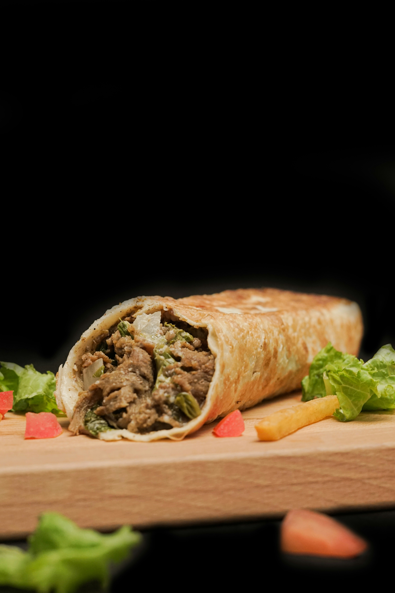

Shawarma & How to make it
Home

Shawarma Recipe
Shawarma is a Middle Eastern dish that originated in the Levant during the Ottoman Empire,
consisting of meat that is cut into thin slices, stacked in an inverted cone,
and roasted on a slow-turning vertical spit. Traditionally made with lamb or mutton,
it may also be made with chicken, turkey meat, beef, falafel or veal.
The surface of the rotisserie meat is routinely shaved off once it cooks and is ready to be served.
Shawarma is a popular street food throughout the Arab world, Levant, and the Greater Middle East.
It has become a popular street food in India. This chicken shawarma is made with flavorful chicken
thighs marinated in a spiced yogurt. Slice the cooked chicken and serve in pita bread with tomato,
sliced onion, and my homemade tahini sauce for a popular Middle Eastern sandwich.
What you need
- ½ cup malt vinegar
- ¼ cup plain yogurt
- 1 tablespoon vegetable oil
- salt and pepper to taste
- 1 teaspoon mixed spice
- ¼ teaspoon freshly ground cardamom
- 8 skinless, boneless chicken thighs
- ½ cup tahini
- ¼ cup plain yogurt
- ½ teaspoon minced garlic
- 2 tablespoons lemon juice
- 1 tablespoon olive oil
- 1 tablespoon chopped fresh parsley
- salt and pepper to taste
- 4 medium tomatoes, thinly sliced
- ½ cup sliced onion
- 4 cups shredded lettuce
- 8 pita bread rounds
How to do
- To make the marinade: Combine malt vinegar, 1/4 cup yogurt, vegetable oil, mixed spice, cardamom, salt, and pepper together in a glass baking dish.
- Add chicken thighs to the mixture and turn to coat. Cover and marinate in the refrigerator for at least 4 hours or overnight.
- Preheat the oven to 350 degrees F (175 degrees C). To make the tahini sauce: Combine tahini, 1/4 cup yogurt, garlic, lemon juice, olive oil, and parsley together in a small bowl. Season with salt and pepper, taste, and adjust flavors if desired. Cover and refrigerate.
- Cover the chicken and bake in the marinade for 30 minutes, turning once. Uncover, and cook for an additional 5 to 10 minutes, or until chicken is browned and cooked through.
- Remove chicken from the dish, and cut into slices.
- Place sliced chicken, tomato, onion, and lettuce onto pita breads. Roll up, and top with tahini sauce.